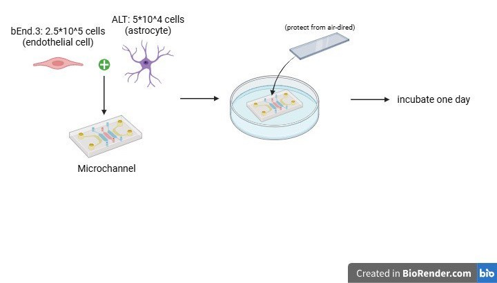

Cell type in our BBB model
- bEnd.3 [BEND3]
- ALT
bEnd.3 are commonly utilized endothelial cells derived from the mice' brain tissue. It is immortalized by infection with the NTKmT retrovirus vector, which expresses polyomavirus middle T antigen. This cell is broadly applied to the construction of 3D model in neuroscience.
ALT are the brain astrocyte cells isolated from mice' brain tissue. It is immortalized by containing Large-T antigen plasmid. ALT express glial fibrillary acidic protein (GFAP), which is a class-three intermediate filament that helps to maintain the mechanical strength and shape of astrocytes.
BBB coculture in transwell

Experiment Photographs


Transwell Result
After staining with 0.5% crystal violet.


Reference
- Xuemei Xu and Jian Liu Asia Technology Center, Corning Incorporated, Life Sciences Shanghai, China. Cell Migration and Invasion Quantification Assay with Acetic Acid-dependent Elution of Crystal Violet. https://www.corning.com/catalog/cls/documents/application-notes/CLS-AN-432_DL1.pdf
- Xiao Chen, Dunfang Liu, Yuanyuan Wu, Han Yao, Qian Xia, Yang Yang (2022). Investigation of the Transporting Behavior of Framework DNA Nano-Devices Across the Artificial Blood-Brain Barrier (BBB). ChemBioChem, 23(21). https://chemistry-europe.onlinelibrary.wiley.com/doi/10.1002/cbic.202200459